전주, 맞춤
추천일정
입니다.
한옥마을과 미식·역사·야경까지, 지역 동선대로 알차게 담았어요.
Day 1
Day 2
Day 3
1
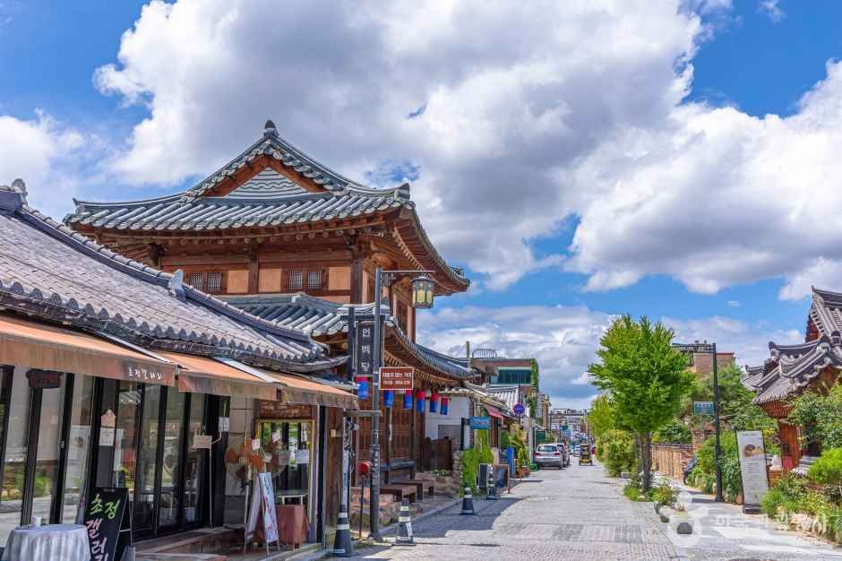
전주한옥마을
walk ·
전북특별자치도 전주시 완산구 기린대로 일대
800여 채 한옥이 모인 전주의 상징. 한복 대여·카페 투어.
2
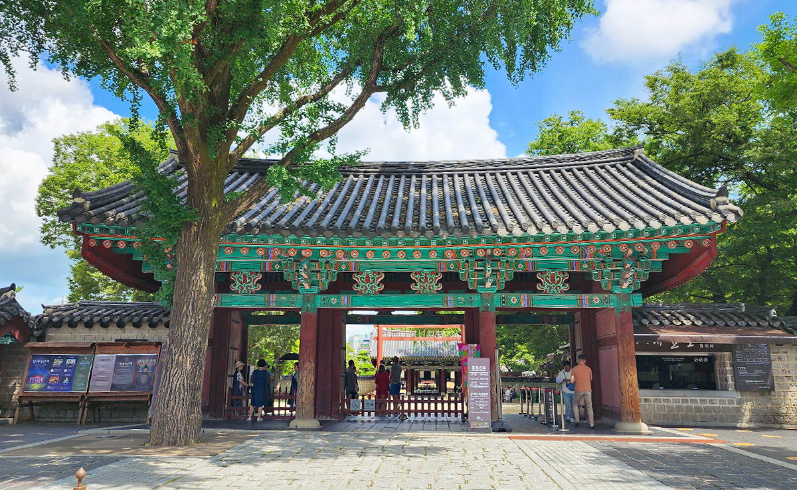
경기전
heritage ·
전북특별자치도 전주시 완산구 풍남동3가 102
태조 이성계 어진 봉안. 전통 정원과 전각이 아름다운 곳.
3
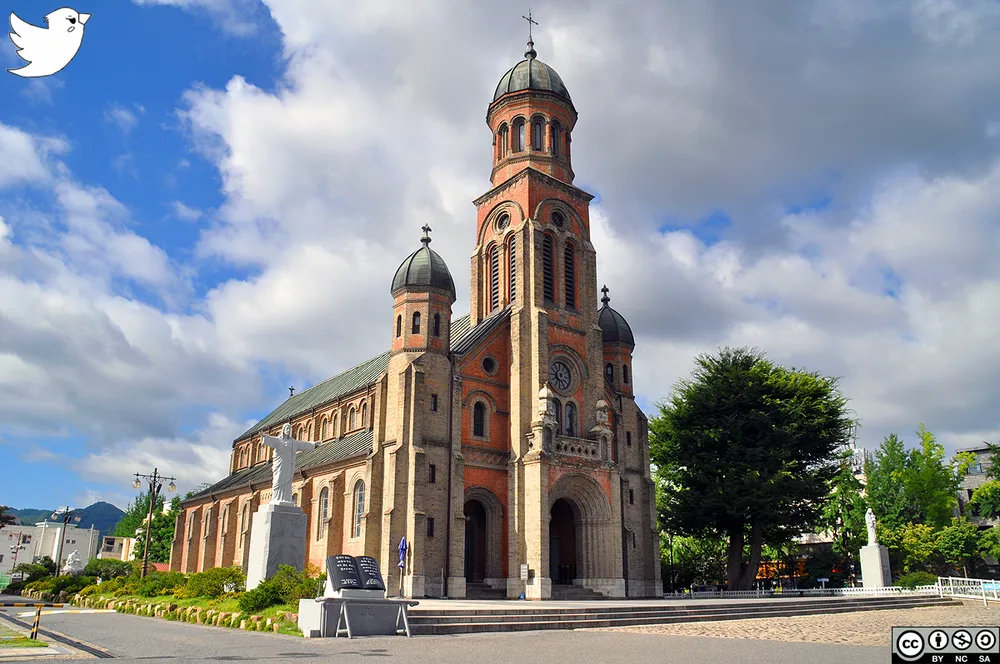
전동성당
architecture ·
전북특별자치도 전주시 완산구 기린대로 73
로마네스크/비잔틴 양식의 랜드마크. 야간 조명 추천.
4
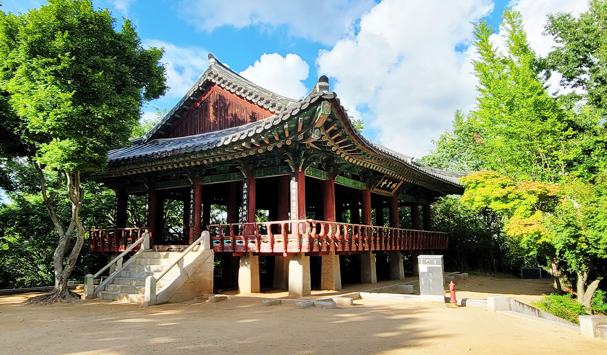
오목대 · 이목대
view ·
전북특별자치도 전주시 완산구 교동 산6-1
한옥 지붕이 내려다보이는 전망 포인트. 해질녘이 특히 멋져요.
5
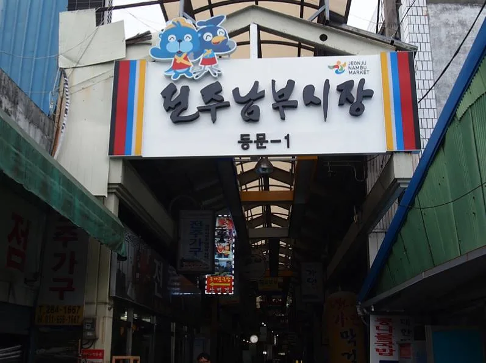
전주 남부시장 & 청년몰
food market ·
전북특별자치도 전주시 완산구 풍남문2길 49
비빔밥·콩나물국밥·막걸리 골목까지 전주 미식 한판.
1
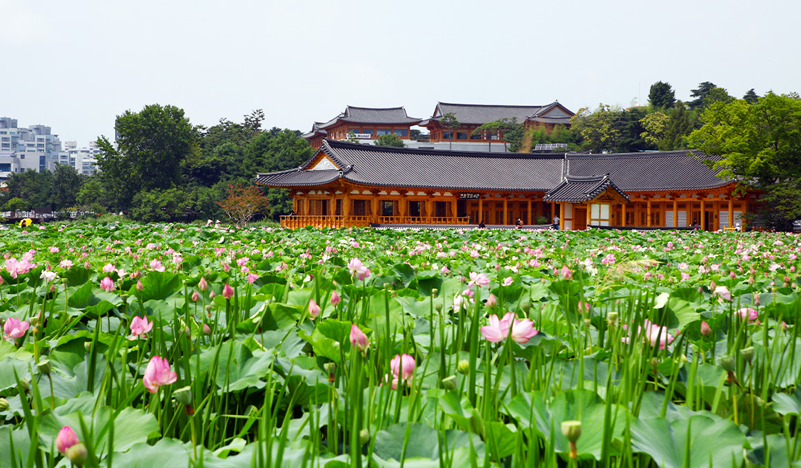
덕진공원
park ·
전북특별자치도 전주시 덕진구 권삼득로 390
연꽃 호수와 전통 정자. 여름 연밭/야간 조명이 아름다움.
2
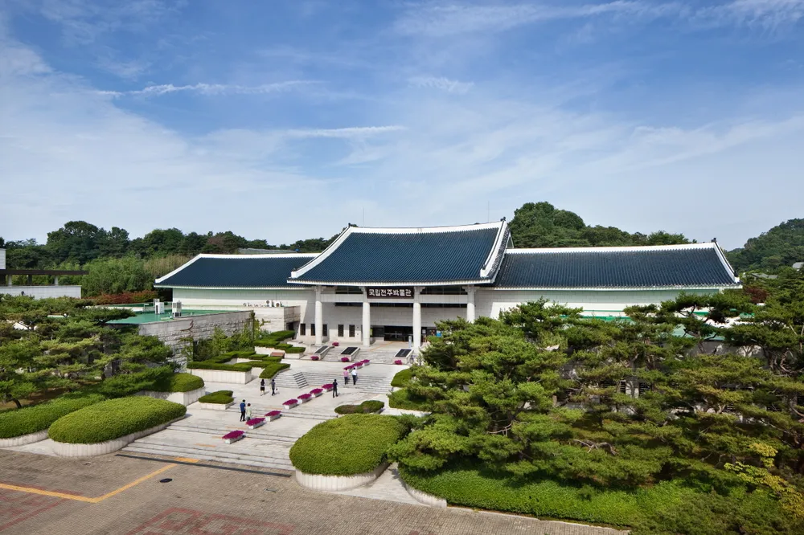
국립전주박물관
museum ·
전북특별자치도 전주시 완산구 쑥고개로 249
전라 지역 역사·유물 상설/특별전. 가족 방문지로 좋아요.
3
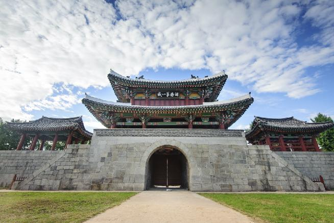
풍남문
heritage ·
전북특별자치도 전주시 완산구 풍남문2길 25
전주 읍성 남문. 야간 조명 아래 야경 산책로로 인기.
4
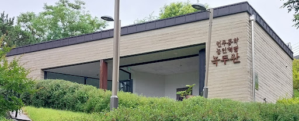
객사길 카페거리
cafe street ·
전북특별자치도 전주시 완산구 전주객사2길 일대
로스터리·디저트숍 밀집. 한옥마을과 도보 연계.
5
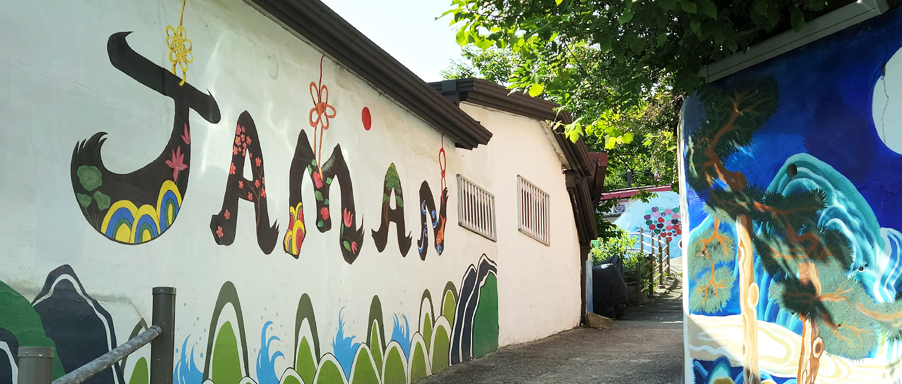
자만벽화마을
spot ·
전북특별자치도 전주시 완산구 교동 68-15 일대
골목 벽화와 감성 카페. 사진 찍기 좋은 언덕 마을.
1
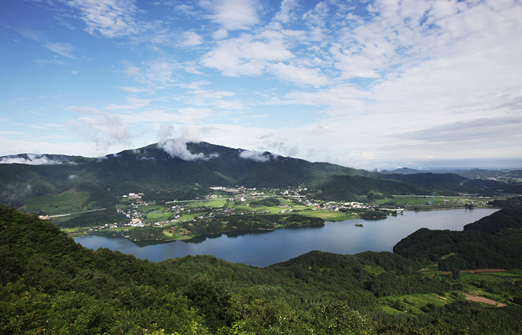
모악산 도립공원
hike ·
전북특별자치도 완주군 구이면 모악산길 일대
전주시내 근교 인기 산행. 가벼운 등산 후 카페 한 잔.
2
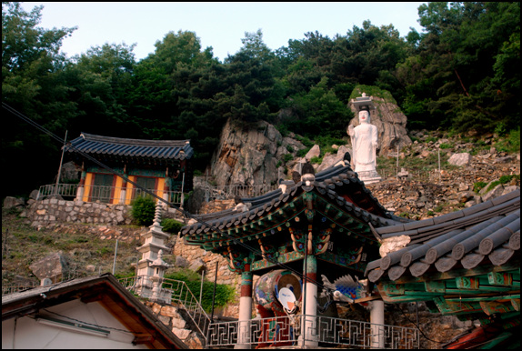
대원사(모악산)
temple ·
전북특별자치도 완주군 구이면 안덕길 365
고즈넉한 산사. 단풍철 산책 코스로 좋아요.
3
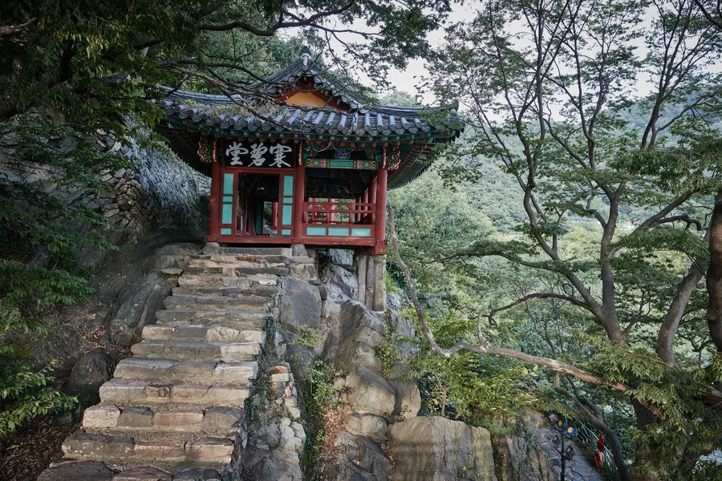
한벽당
pavilion ·
전북특별자치도 전주시 완산구 교동 15
전주 8경 중 하나. 전주천 따라 산책하며 사진 남기기.
4
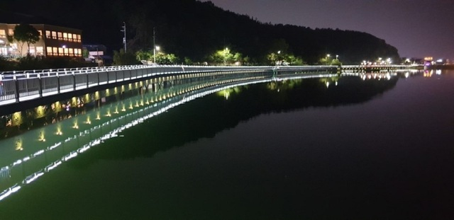
아중호수공원
lake walk ·
전북특별자치도 전주시 덕진구 아중로 31
나무데크가 있는 호수 산책 코스. 노을 시간 추천.
5
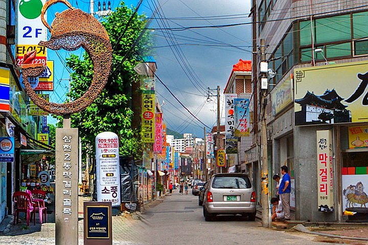
전주 막걸리 골목
food ·
전북특별자치도 전주시 완산구 동문길 일대
한 상 가득한 푸짐한 안주로 유명. 대중교통 이용 권장.
내 일정으로 담기